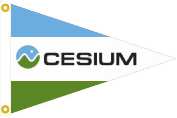
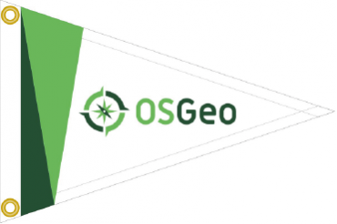
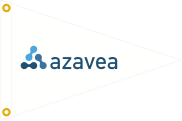

FOSS4G-NA Travel Grant Program
FOSS4G-NA and OSGeo are pleased to provide a travel grant program for this event to assist those who would otherwise have difficulty attending.
In addition to the grants below (each includes a conference ticket) opportunities are available to volunteer at the event, which can help you attend additional activities such as the gala dinner and workshop day.
We would like to thank this activity’s sponsors:
  If you wish to support this program, see details at the end of this page.
For Applicants
These notes describe the application process for a travel grant to attend FOSS4G-NA event happening April 15-18, 2019, and the criteria by which applications are evaluated.
Travel Grants
The travel grant will include a full conference ticket and a sum of up to $1000 USD to put towards travel and accommodation expenses.
Keep in mind a travel grant is not intended to cover the full cost of attending. Applicants are asked to demonstrate that they are either in part funding their attendance or have received further sponsorship from an employer or some other body.
Applicants can apply for one of three available grants:
- Conference Ticket, choice of Gala or Workshop day ticket
10 grants available
Grants suitable for local delegates. - $250 Travel Grant, Conference Ticket, choice of Gala or Workshop day ticket
10 grants available
Suitable for regional travel. - $1000 Travel Grant, Conference TicketGala or Workshop day ticket
3 grants available
Suitable for North American travel
Applicants must choose carefully the size of grant to apply for. We ask that you apply for the smallest grant you can make effective use of, as there will be far more $250 grants.
The number of grants available is very much dependent on the generosity of our sponsors and may be adjusted depending on the level of funding raised and the number of applications received.
Grants are made available as a cash card at the registration desk on the first day of the conference. As the travel grant is not intended to be your sole source of funding we ask to be shown a travel or accommodation receipt at this time.
Eligibility
We would like to help you attend FOSS4G-NA:
- if you would not otherwise be able to attend the event
You are ready to learn and apply foss4g technologies:
- geospatial students, professionals and enthusiasts keen to dive into open source
- open source advocates who are ready to learn mapping technologies
You are ready to share and build community:
- Do you have a local meetup, or colleagues, to share the foss4g story with?
- Do you participate in an open source community, project or event? Volunteering with FOSS4G-NA counts…
- Are you presenting a talk or workshop at this event?
Additional selection criteria:
- We are seeking to encourage diversity with our Travel Grant Program (TGP) and encourage minorities (visible or otherwise) to apply
- Some preference will be given to applicants within the North American continent
Applications
Applications are now open: FOSS4G-NA 2019 Travel Grant Application
Applications must be received by April 3rd, with successful applicants being notified on April 5th (in time to make travel arrangements.)
Applicant data will be kept confidential and only used for assessing TGP applications. Please ensure that the email address provided is regularly monitored as the selection committee may seek clarification of your response.
Supporting the TGP
The travel grant program is funded through:
- Ongoing crowdfunding campaign
- Collection at regional FOSS4G events and OSGeo Code Sprints
- Sponsor donations, recognized as part of OSGeo sponsorship program
- Annual commitment from Open Source Geospatial Foundation
Event sponsors are asked to email us with your interest in supporting the travel grant program and being listed on this page.
Individuals are invited to help make our events more accessible and increase the diversity of our attendees by making a donation to the FOSS4GNA TGP via OSGeo PayPal account.
About TGP
The OSGeo FOSS4G Travel Grant Program initiative has been operating since 2017 to facilitate accessibility and diversity at OSGeo global and regional FOSS4G events.
The FOSS4G-NA Travel Grant Program (TGP) is administered by the OSGeo Conference Committee and supported by members of the FOSS4G-NA Local Organizing Committee. Further information about this program is available on the OSGeo TGP page.